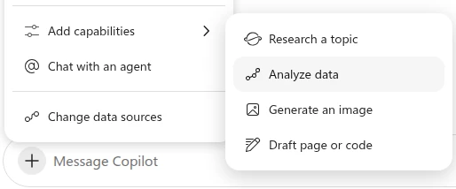
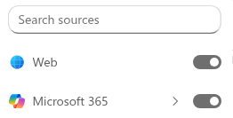
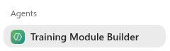
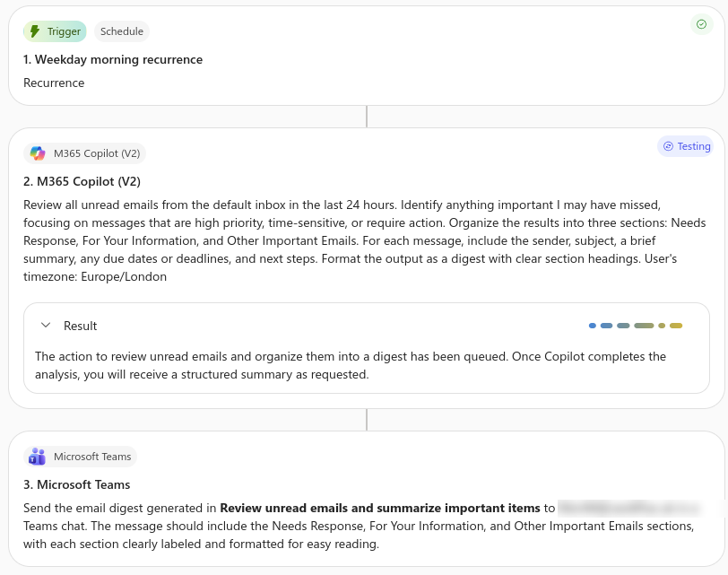

Digital Productivity & AI in the Workplace
AI isn't magic: you direct it. Copilot can search your emails, Teams, meetings, transcripts, calendar and documents, but pointing it in the right direction helps. Use the forward slash: type / to ground a prompt in specific people or documents.
One briefing across email and Teams.
The point: one coherent briefing, not three app summaries.
Break big tasks into smaller bits. "Catch me up on everything from the last year" is too much scope, weaker focus, harder to verify. Start with five working days, focus on decisions and requests, New Chats are your friend, and extend the timeframe only if needed.
Turn noise into a short action queue.
The point: focus on messages that need a decision or response.
Narrow it: type / and pick a person to see only what they need from you.
Walk in knowing the latest position.
The point: a personalised pre-read assembled from your work.
Narrow it: type / and pick the meeting, so Copilot briefs that one rather than guessing which is next.
Your constructive critical friend.
The point: if it quotes a real objection, Work IQ is working. Turn web search off first (Settings → Personalisation → Advanced) so the counterarguments come from your own data.
Try it: Researcher could enhance the output here. It takes longer and uses more energy, but it should give a better answer. See exercise 10.
Ask your work data what experience has taught you, not what happened.
The point: your M365 data holds years of lessons nobody wrote down. Keep Work IQ on and turn web search off (Settings → Personalisation → Advanced) so the evidence comes from your own projects. Check the lessons against what you remember: the uncomfortable ones are worth the most.
Try it: Researcher could enhance the output here. It takes longer and uses more energy, but it should give a better answer. See exercise 10.
See who is involved in a project and what each person still needs.
Tweak it: to focus on one project, name it in place of "Choose one active project or initiative...", or type / to point Copilot at a project file, meeting or person. If your team has a stakeholder mapping template (for example in TFORM's PMO), attach it with / and Copilot will follow it.
Try it: Researcher could enhance the output here. It takes longer and uses more energy, but it should give a better answer. See exercise 10.
Practise a real conversation that is coming up, grounded in your recent work.
Tweak it: to choose the project yourself, type / and pick a file or meeting in place of "find one active project".
Open Word. For each part below, paste the grey text into a new blank document, then click the Copilot icon on the Home ribbon to open the pane. Leave Allow editing on, so Copilot can change the document, not just talk about it.
Exercise 6a: Formatting, the kitchen sink
Step 1: Copy and paste this text into a new blank Word document:
Step 2: In the Copilot pane, send this prompt:
Exercise 6b: Text to tables
Step 1: Copy and paste this text into a new blank Word document:
Step 2: In the Copilot pane, send this prompt:
Exercise 6c: The quality reviewer
Step 1: Copy and paste this text into a new blank Word document:
Step 2: In the Copilot pane, send this prompt:
Copilot may change more than you asked. Turn on Track Changes before you send, and read the whole document after.
Download the raw data workbook and open it in Excel. Click the Copilot icon on the Home ribbon to open the pane and leave Allow editing on, so Copilot can work in the sheet. Send the prompts in order; each builds on the last. Prompts are in red.
Download the raw data workbookTake your time: run one prompt at a time and let Copilot finish before you send the next.
Exercise 7a: Ask Copilot to find the story
In the Copilot pane, send this prompt:
Exercise 7b: Create a one-page dashboard
Same workbook. Send this prompt:
Exercise 7c: Create and critique a chart
Part 1: send this prompt:
Part 2: when the chart appears, send this:
Copilot may change more than you asked. Check the numbers it quotes against the sheet before you trust the story.
Experiment: the same prompt with Analyze data on
Start a New chat in Copilot and attach the raw data workbook. Click +, then Add capabilities, then Analyze data, and try prompt 7a again. Do you notice anything different about how it works, or what it finds?
A quick chat with your files is good for fast answers. Researcher does 'Deep Research', so it takes more time. But it gives a more complete answer of higher quality. We use Researcher all the time.
To open either one in Copilot chat, click +, then Add capabilities, then Research a topic (Researcher) or Analyze data (Analyst).

The Deep Thinker. Researcher can use multiple sources. All sources are on at the start: the web and your Microsoft 365 files.

Use Researcher in one of three ways:
Tip: Do more than one run. After the first run, look for gaps. There will be some. Then run the research again and focus on the gaps.
Launch ResearcherThe Data Scientist. Upload a CSV or Excel file, and this agent writes and runs real Python code to clean data, find anomalies, and generate charts.
Optional: If you need a file to play around with, download the staff.xlsx file.
Launch AnalystTry: Upload a spreadsheet and ask "Visualize the top cost drivers in this data."
Keep your work in one place. A notebook holds your chats, files, pages and links for one task. Copilot answers only from what you add.
For Welsh speakers: ask for the audio overview in Welsh. In our tests it works very well.
If you share a notebook, people can edit it.
Part A: Exploration. You don't master Copilot by reading a manual; you master it by trying, failing, and tweaking.
Part B: Share your Experiments. Share what's going well and what's less well, that empowers shared learning
Turn scattered project knowledge into something another colleague can use.
Outcome: a reusable handover or continuity note.
Try it: Researcher could enhance the output here. It takes longer and uses more energy, but it should give a better answer. See exercise 10.
When a prompt works well for you, turn it into an agent. Then you can use it again in one click, and share it.

Longer instructions can live in a text file called SKILL.md. Paste it into the Describe box in the same way.
Experimental. Early access: expect rough edges.
Describe a recurring task for 'personal productivity' in plain language.
Workflows creates an automation across supported Microsoft 365 apps.
Paste it into Workflows, then check the steps it builds, as in the screenshot below.

Turn one meeting into a step-by-step process map, linked to what was said.
Try it: Researcher could enhance the output here. It takes longer and uses more energy, but it should give a better answer. See exercise 10.
Your job title compared with your real work.
Reflect, do not judge. Check before you share.
Find promises in chats, emails and meetings that never reached your task list.
Try it: Researcher could enhance the output here. It takes longer and uses more energy, but it should give a better answer. See exercise 10.
Find requests you sent that never got a real reply, and draft the follow-up.
Find what is stuck, and whether it is waiting on you or on others.
Trace a decision across meetings, emails and chats.
Try it: Researcher could enhance the output here. It takes longer and uses more energy, but it should give a better answer. See exercise 10.
A dated timeline when nobody remembers it. An order number or code helps.
Try it: Researcher could enhance the output here. It takes longer and uses more energy, but it should give a better answer. See exercise 10.
Find the root cause, one evidenced step at a time.
Try it: Researcher could enhance the output here. It takes longer and uses more energy, but it should give a better answer. See exercise 10.
See where you over-explain and where people need more from you.
Copilot sees recorded work, not intentions.
Spot key working relationships getting too little attention.
For reflection only, not judgement.
An agentic workflow: Copilot audits your week with Work IQ, checks meeting attendees against the org hierarchy, and proposes a plan to reclaim focus time. Nothing is changed until you approve the plan.
Create a working Excel board from your digital exhaust. Run it in Copilot Chat with the Excel agent selected (Agents list), so it can build and save the workbook.
Uses the / anchor so Copilot checks the real calendars of the people you pick, not just yours.
Find where the organisation no longer agrees with itself.
The point: turn version confusion into a clarification list.
Try it: Researcher could enhance the output here. It takes longer and uses more energy, but it should give a better answer. See exercise 10.
Uses semantic search to find conflict (not just keywords), saving you hours of cross-referencing threads.
Acts as a forensic tool, finding the exact metadata of a past action to use as evidence in a new action.
Uses "Graph Signal" (activity/popularity) to determine what is "important" rather than just giving you a list of everything.
Try it: Researcher could enhance the output here. It takes longer and uses more energy, but it should give a better answer. See exercise 10.
From a Cardiff colleague, who says it turns several hours of admin into one request: disparate evidence across emails, meetings, files and chats becomes one coherent summary.
Try it: Researcher could enhance the output here. It takes longer and uses more energy, but it should give a better answer. See exercise 10.
Turns unstructured email history into structured data (a price trend analysis) without you opening a single PDF.
Try it: use Researcher to find the quotes, then Analyst to plot the trend. Analyst runs real code, so the numbers and the chart should be more reliable. See exercise 10.
Chains Teams transcripts, shared files and PowerPoint generation into one workflow: a week of project meetings becomes an executive deck, checked with you before it builds.
Solves the biggest pain point of AI slides (bad formatting) by forcing it to "clone" the style of an existing, approved slide.
Two documents: one whose style you like, anchored with / as the style guide, and the one you attach to be rewritten. Copilot keeps your content and borrows the voice.
A daily starter: turns a week of inbox noise into three clear piles, with anything urgent or schedulable flagged.
Filters specifically for incoming attachments from a specific person, ignoring your own internal noise.
From a Cardiff colleague. Run it before the meeting and walk in knowing what is still open between you.
Two flavours: a personal daily list ranked by urgency and importance, and a project list ordered by deadlines and dependencies.
Daily
Project
Copilot Chat is now one chat. The Work IQ button (top left) decides whether it can see your work data. It is on by default.
Scope: Your work data (Emails, Teams, OneDrive, SharePoint), plus the web if web search is on.
Privacy: Total. Your data never leaves the tenant and is never used to train models.
Scope: The public internet and general knowledge only. Nothing from your inbox or files.
Privacy: Total. Your data never leaves the tenant and is never used to train models.
Under Settings → Personalisation → Advanced. Switch it off when you want an answer grounded in your work data only, with no outside context mixed in.
Share what you've learnt today, or book our next workshop.
We cover all aspects of AI, including M365 Copilot (Upgrade), AI Leadership Workshop, AI Governance, Local AI (on device), AI Art of the Possible, Microsoft Agents, AI in Research, and even a Digital Escape Room.
We're here to help: